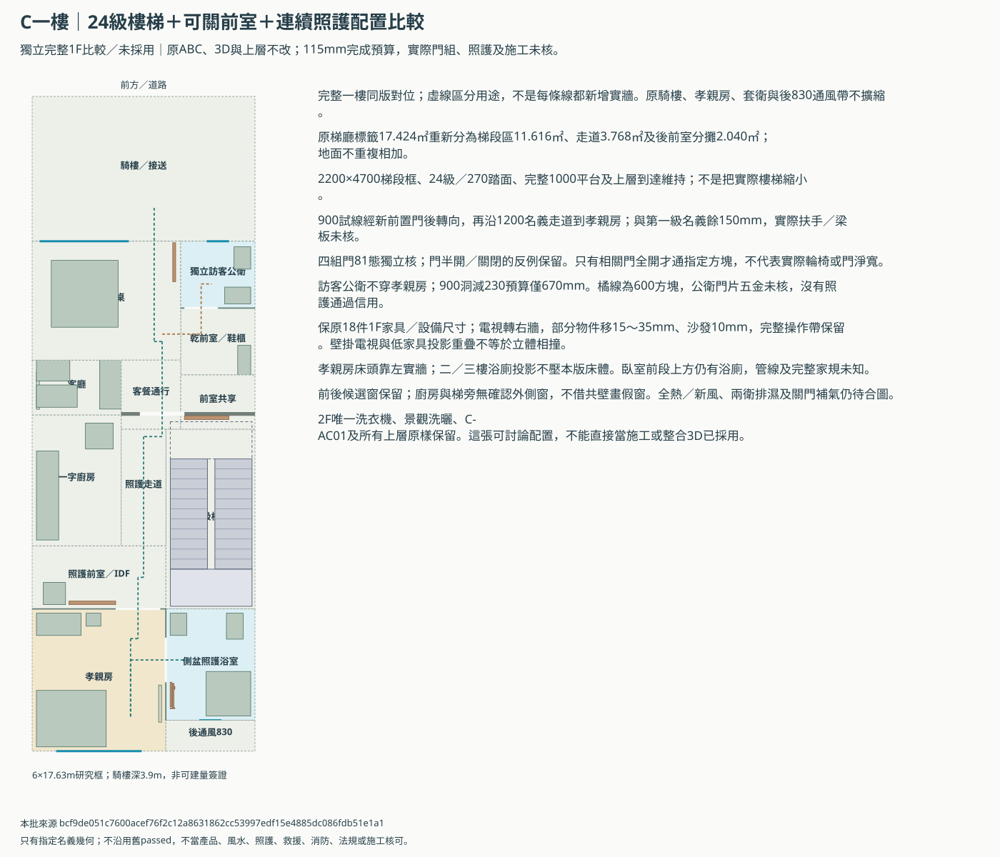
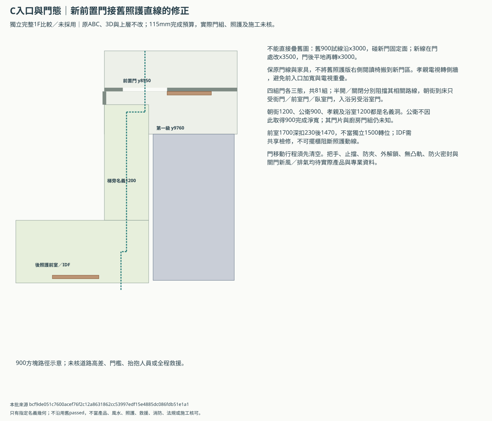
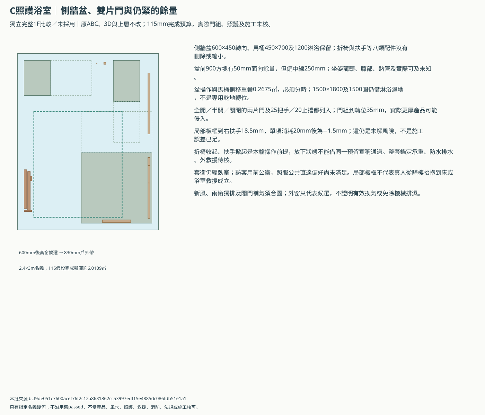

C一樓：完整平面與照護局部同版比較
獨立比較／未採用；原ABC、主3D與上層保留。前置可關門方向已確認，整套照護／產品及工程尚未核定。
C一樓獨立同版比較可串起新前置門、梯旁走道、孝親房入口與側盆／雙片浴室門；維持家具尺寸、樓梯與上層。僅列明方塊及門態成立，濕地分時、商品／救援、坐姿可及與機電仍未核。
重新分區不增加室內面積；梯段、完整平台不縮。保18件一樓家具／設備尺寸；小移完成面邊距，電視轉側牆。訪客公衛仍獨立，C仍只有2F一台洗衣機。
完整一樓配置


入口接法與81組門態


浴室局部與保留風險


可用範圍與還需要的資料
- 只輸出獨立完整1F與局部靜態比較；不覆寫主3D、原ABC、B前後兩版或任何正式需求。前置可關門是屋主已確認的方向，完整照護整合仍未採用。
- 梯旁走道及後照護前室重新分區只整理同一地面，沒有新增室內面積；24級／270踏面、完整1000平台、原斜梯／板洞待核範圍不縮。
- 沿用現行客餐沙發／茶几／閱讀椅位置，避免舊照護版閱讀椅撞新門；孝親房電視移到右牆以避加寬前入口。家具尺寸與件數不減。
- 115mm每面完成預算不是實測；另將床、衣櫃、鞋櫃、IDF及公衛器具等原80mm邊距作15～35mm微調，保留全部操作帶，不以舊80mm排法冒充115mm成立。
- 四組主路門各全開／半開／關閉共81組獨立幾何狀態；只有相關門全開時列明方塊路線才通，移動中的門須先清空路線。沒有門產品、實際淨寬、防火或外救援核可。
- 訪客公衛仍為900mm名義門，在230總框假設只餘670mm；600方塊試線只比較一般訪客，沒有把照護路線900目標降低，也沒有公衛輪椅核可。公衛門片／五金尚缺，不把它列為已完成通路。
- 照護浴室保原2.4×3m、三件器具尺寸及八類配件；1500×1800及1500圓仍借淋浴濕地，只按折椅收起／扶手掀起比較，不代表同時照護、洗澡或乾地轉位。
- 側牆盆到位仍偏250mm，坐姿可及未知；門組到轉位35mm、板框到右扶手18.5mm仍緊，單項消耗20mm會出現負餘量。
- 套衛仍需穿孝親房，公共直達照服偏好未解；板框只是局部剛性板示意，沒有騎樓到床的真人抬抱或全程救援核可。
- 保床體上方避浴廁的屋主範圍，不放寬成浴廁可壓床；臥室前段上方仍有浴廁，管線／梁及家規未全核。
- 只畫既有前後候選窗，廚房與梯旁不借側界假窗；三棟新風方向與C-AC01室內立管候選保留，關門補排氣、消防、合法外口、冷凝水及檢修需實際機電資料。
- 2F／3F／RF、C唯一2F洗衣機、景觀／洗曬與全部空調機位及路線不改；本批不以軟體幾何代替照護、宗教、產品、結構或施工核可。
舊照護來源差異保留
| 來源 | 處理 |
|---|---|
| scripts/lib/model3d_openings.py | 使用凍結計畫／模型對位，重算本批幾何；不借舊passed |
| scripts/lib/model3d_review.py | 使用凍結計畫／模型對位，重算本批幾何；不借舊passed |